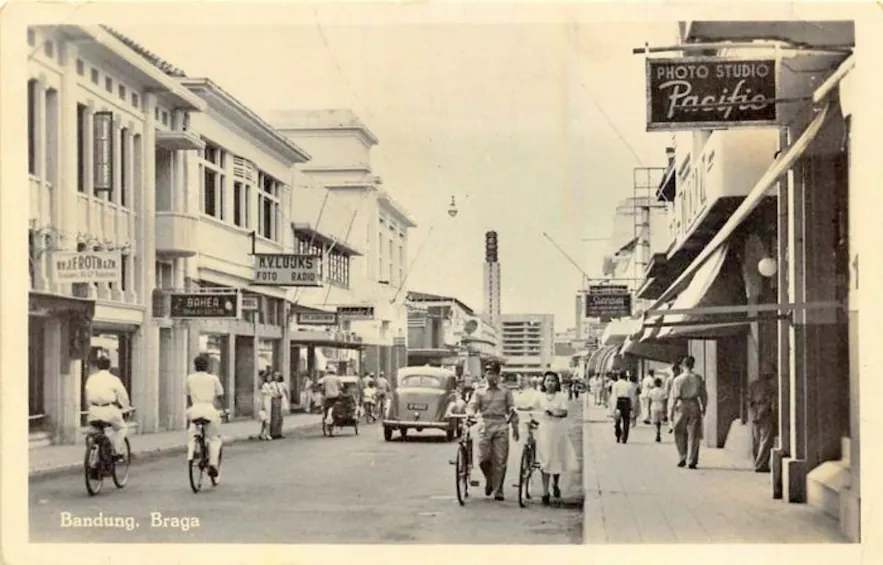

In ancient times, textile coloring was an artistry that transcended mere practicality, becoming an embodiment of cultural heritage and symbolism. One unique and fascinating historical anecdote hails from the vibrant city of Tyre, situated along the Mediterranean coast in ancient Phoenicia.
Tyre was renowned for its prized purple dye, extracted from the secretions of a mollusk called Murex. This rare and labor-intensive process involved collecting thousands of these mollusks and then meticulously extracting the purple pigment hidden within their glands. As a result, this rich and luxurious dye, known as "Tyrian Purple," became synonymous with royalty and nobility.
Tyrian Purple dyeing was so exclusive that the Roman Empire, for instance, limited its use to members of the imperial family and high-ranking officials, enhancing the aura of power and prestige associated with it. The dye's scarcity and complex production methods also made it one of the most expensive and sought-after commodities in the ancient world.
Throughout history, textile coloring techniques evolved, influenced by trade, exploration, and technological advancements. From the intricate tie-dyes of ancient Asia to the sumptuous indigo hues cherished by African cultures, each civilization left its indelible mark on the art of coloring textiles.
Today, as we embrace modern techniques and eco-friendly practices, we pay homage to this extraordinary history, infusing our textiles with vibrant shades that echo the legacy of those ancient artisans while paving the way for a sustainable and beautifully colored future.
 Founded in the vibrant year of 2000, our distributor company has been on an inspiring journey of color, fueling a vision to paint the world with boundless vibrancy. Thriving through the years, we have been dedicated to providing people with an awe-inspiring palette, empowering them to infuse life with hues that ignite the imagination.
Based in the heart of Bandung, West Java, we take pride in being a formidable force in the realm of textile coloring. This bustling city, renowned for its creative spirit and artistic flair, serves as the perfect backdrop for our thriving enterprise. As one of the largest textile coloring distributors in this lively metropolis, we are at the forefront of innovation, connecting artisans and designers with a kaleidoscope of shades to weave dreams into reality.
At our core, we cherish the rich history of textile coloring, honoring the legacy of ancient traditions while embracing cutting-edge techniques to shape a more sustainable future. Our commitment to quality, creativity, and environmentally-friendly practices sets us apart, making us a trusted partner for those who seek to make their world more vibrant and extraordinary.
Join us on this colorful journey, where every thread we touch weaves a story of artistic brilliance, making the world a canvas of endless possibilities.